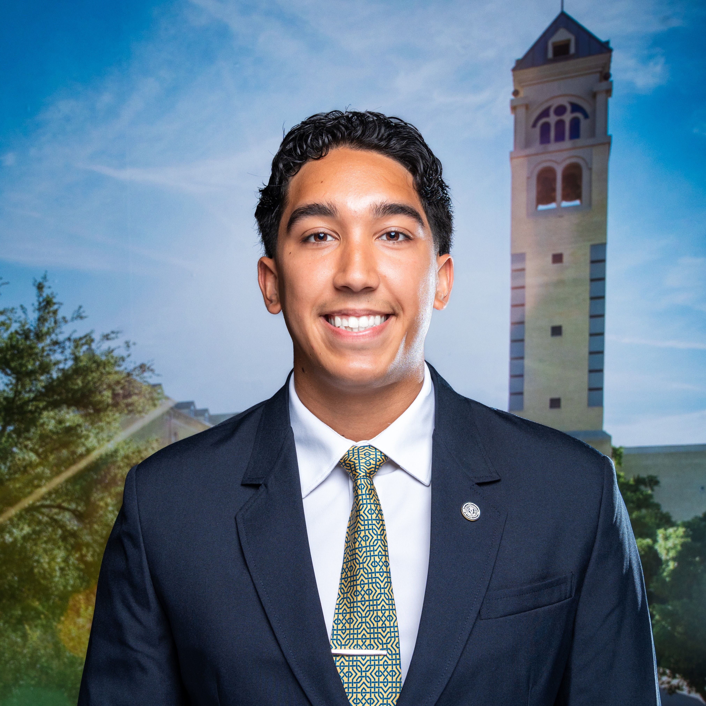

About Me
I'm Nicholas Galus, a computer engineering junior at St. Mary's University (Honors Program, BS/MS track) with a passion for bridging hardware and software through embedded systems. I come from a Hispanic, Filipino, and Ukrainian family, and I grew up with a wrench in one hand and a keyboard in the other: LEGO robotics with my mom, engine and transmission rebuilds with my dad. This past summer I was an Embedded Software Engineer Intern at Polaris, where I built vehicle display features in C++ and QML on Linux and designed a power supply board that made testing easier for the engineers. My PCB team placed 5th nationally in the design round of the Bright Electronics Manufacturing Challenge, and I lead as IEEE Student Branch President. My career goal is engine controls for automotive and powersport.
